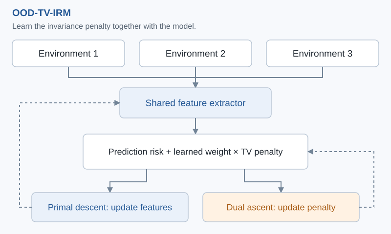
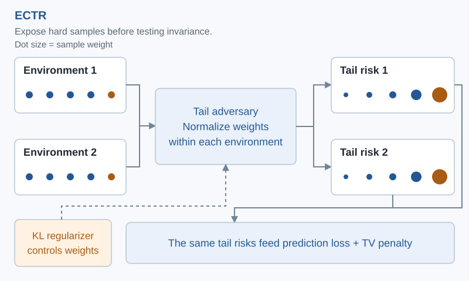
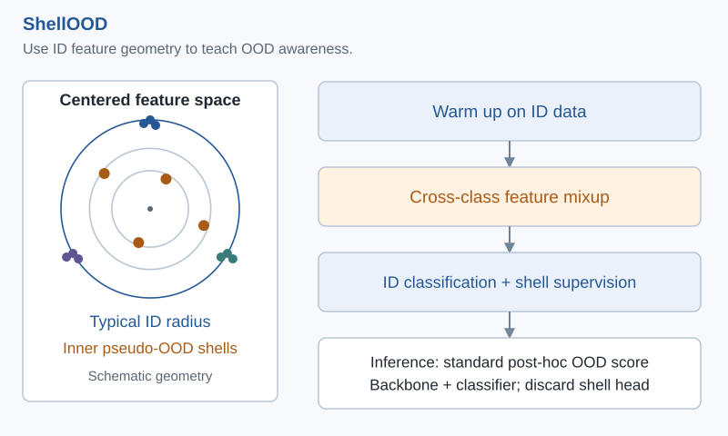
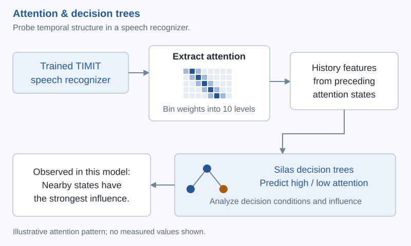

OOD-TV-IRM interprets the autonomous total-variation penalty as a Lagrange multiplier. A primal-dual learning scheme jointly updates the feature extractor and the penalty model, balancing prediction risk with pressure toward invariance across environments.

The primal update reduces the full invariant-risk objective. The dual update strengthens the TV penalty through the learned multiplier. Alternating updates couple predictive learning and invariance; this diagram shows the known-environment form.
Core idea. Make the strength of the invariance constraint part of the learning problem.
Rare or difficult examples can disappear inside an environment's average risk. ECTR learns adversarial sample weights and normalizes them within each environment, then evaluates both prediction loss and the invariance penalty on the same reweighted risks.

Weights emphasize difficult samples inside each environment. Environment-wise KL regularization controls weight concentration; the same weighted risks feed the supervised objective and TV stationarity penalty. Environments may be observed or inferred.
Core idea. Couple tail robustness and invariant learning through a shared, environment-conditioned measure.
ShellOOD learns OOD-aware representations using only in-distribution training data. After classifier warm-up, it mixes features from different classes and uses an auxiliary shell head to organize these synthetic features into inner radius shells around the global feature center.

The outer radius represents typical centered ID features; inner shells provide targets for synthetic pseudo-OOD features. The shell head is used only during training. At inference, standard post-hoc scores use the learned features or logits. Geometry is schematic.
Core idea. Use feature geometry as an auxiliary training signal while retaining the primary classification task.
CROSS extends the distributional perspective to on-policy self-distillation, where the student model generates its own training distribution and that distribution evolves during learning. It focuses on identifying unreliable trajectories and converting reliable, recoverable local corrections into targeted distillation signals.
Core idea. Construct reliable learning signals within a dynamically self-generated training distribution.
This study probes attention dynamics in an encoder-decoder speech recognizer trained on TIMIT. It discretizes attention weights into ten levels and trains decision trees to predict high or low attention from preceding attention states, then inspects the learned decision conditions.

Extract attention matrices, discretize weights, form history features, and predict high or low attention using Silas decision trees. Influence analysis characterizes temporal dependence in the studied model; it does not establish a general causal law.
Core idea. In the studied system, nearby attention states carry the strongest predictive influence.
{kind=link}
{kind=link}
{kind=link}
{kind=link}